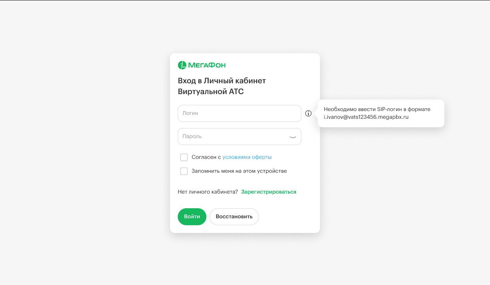

Добавление IP-адреса в список разрешенных
По умолчанию доступ к API запрещен для всех. Чтобы разрешить выполнение запросов, необходимо добавить IP-адрес хоста, с которого осуществляется запрос, в белый список. Это можно сделать через личный кабинет, перейдя в раздел «Интеграции -> API -> Настройка API».
Инструкция по настройке доступа к API
По умолчанию доступ к API запрещен для всех. Чтобы разрешить выполнение запросов, выполните следующие шаги:
Вход в личный кабинет
- Войдите в свой личный кабинет.

Переход в раздел интеграций:
- Найдите и выберите раздел «Интеграции».
[image:./dobavlenie-ip-adresa-v-spisok-razreshennykh-2.png:::0,0,100,100:square,0,47.1461,20.7812,5.42005,Найдите и выберите раздел «Интеграции»,top-left]
[image:./dobavlenie-ip-adresa-v-spisok-razreshennykh-3.png:::0,0,100,100:square,0.626717,43.6509,14.1667,5.32995,,top-left,&square,95.6044,1.52086,4.43485,7.99492,,top-left]
Затем щёлкните на кнопку API.
Настройка API
[image:./dobavlenie-ip-adresa-v-spisok-razreshennykh-4.png:::0,0,100,100:square,82.9412,24.7935,16.2157,12.6022,,top-left]
- В разделе «Настройка API» найдите кнопку «Добавить доступ».
Нажмите на нее, чтобы добавить IP-адрес.
Добавление IP-адреса

-
Введите IP-адрес хоста, с которого будет осуществляться запрос.
-
Если вы хотите разрешить запросы с любого IP-адреса, укажите 0.0.0.0/0.
-
Подтвердите изменения, нажав кнопку “Добавить”.
Теперь ваш IP-адрес добавлен в белый список, и вы сможете выполнять запросы к API.